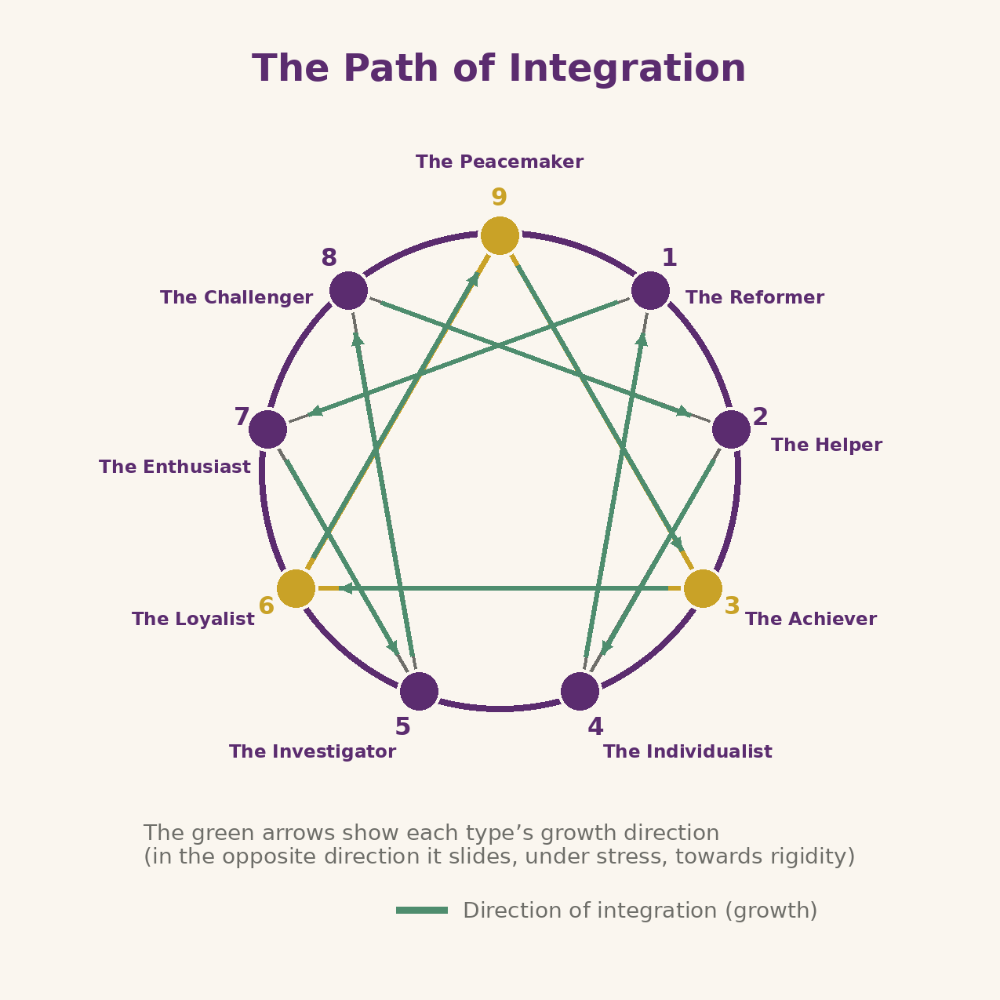

⬤ Journey marker: "how you grow" — integration and return to Essence. (Step 3 of 5)
The path of growth
Your type is not a life sentence
The good news of the Enneagram is that your basic type is an adaptation, not an identity: it describes what you do to protect yourself, not what you are. The whole Essence is not lost — it has been clouded. The inner work consists of gradually reducing the clouding.
Where to begin
The first step is to observe your passion and your fixation without judgement: noticing the moment anger thickens into resentment (1), the fear that scans the future (6), the hurry to move on to the next experience (7). Not to correct yourself, but to stop identifying with the pattern.
The direction of integration
Two key points first. Every type has in the circle an integration point — which it "rises" towards in growth, taking on its best resources — and a stress point — which it "slides" towards under pressure, taking on its rigidities. If type numbers are still unfamiliar to you, you will meet them one by one at step 4 (The Nine Types); the full mechanism, wings and triads included, is step 5 (Triads & Types). Here, just remember that the movement shown by the arrows is available to anyone, at any time.
Each type "rises" towards another point of the symbol, taking on its healthy qualities: the 1 rediscovers the joy of the 7, the 4 the equanimity of the 1, the 6 the peace of the 9, the 9 the determination of the 3. Integrating does not mean becoming another type, but allowing your Essence to express itself without passing through the defence.

Reassembling what was split
Growing, in this perspective, means reintegrating the parts of yourself exiled in childhood: the vulnerability the 8 chased away, the sadness the 7 forbade, the anger the 9 buried. The lighter the personality becomes, the more Essence shows itself — not as an idea, but as presence, the capacity to love and to act freely.
The Enneagram asks for no faith: it asks for honest observation. Curiosity and kindness towards yourself are enough to begin. The journey is long, but every step of awareness gives back a piece of what you were.